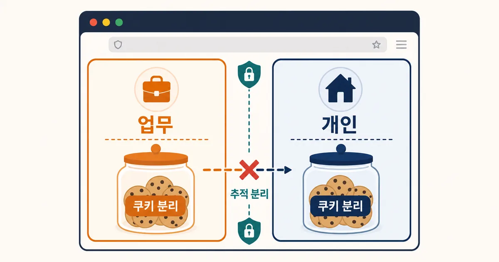
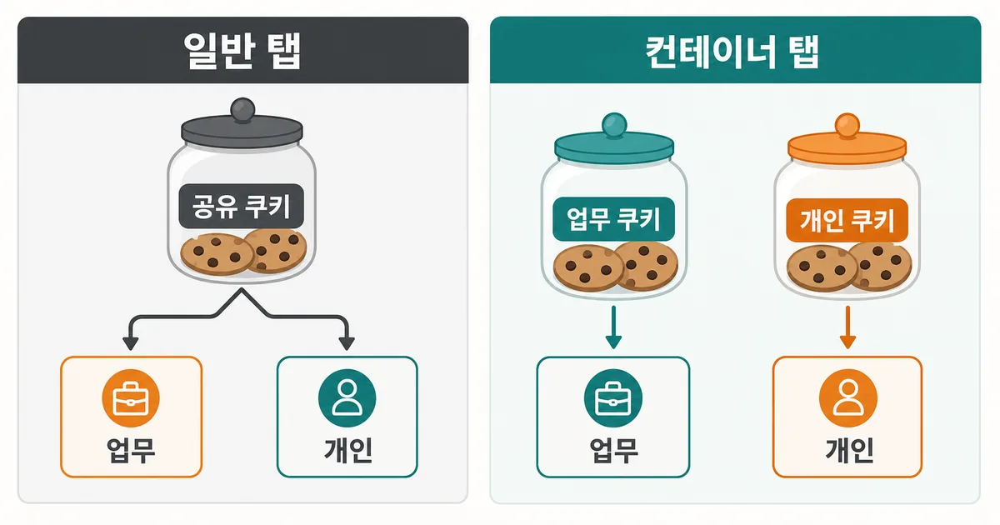
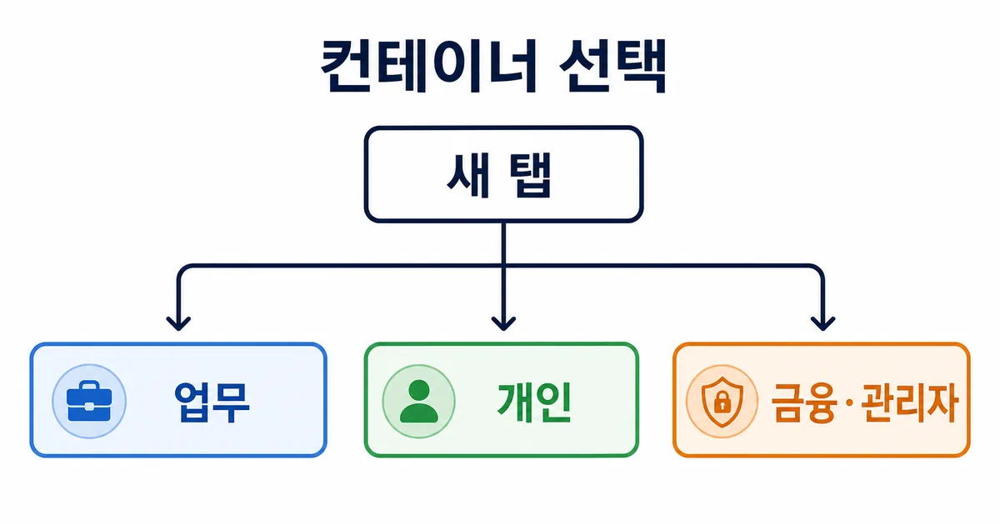

2026. 7. 23 (목) · 약 9분
회사 Google 계정으로 문서를 열어 둔 창에서 개인 계정의 메일을 확인해야 할 때가 있다. 지금까지는 프로필을 바꾸거나 확장 기능을 설치하는 방식이 익숙했다. Mozilla는 7월 21일 Firefox 153에 컨테이너 기능을 브라우저 기본 기능으로 미리보기 도입했다. 같은 창에서도 업무·개인·쇼핑·금융처럼 맥락을 나눠 로그인 쿠키와 추적 정보를 각각 보관하는 것이 핵심이다. 다만 이것은 익명 모드나 완전한 신원 은닉 기능이 아니므로, 어디까지 분리되는지부터 알아야 실제로 쓸모가 있다.

오늘의 핵심뉴스
심층 분석 · Mozilla Firefox Blog · 2026. 7. 22
Firefox 153, 컨테이너 기능을 브라우저 기본 미리보기로 도입
Mozilla는 Firefox 153에서 컨테이너를 기본 기능으로 미리보기 제공한다. 컨테이너마다 쿠키와 광고 추적 정보를 분리해 같은 창에서 여러 로그인 맥락을 관리할 수 있으며, 기존 확장은 계속 병행해 사용할 수 있다.
무엇이 바뀌었나: 확장 기능에서 기본 기능으로
Firefox의 Multi-Account Containers는 오랫동안 확장 기능으로 제공됐다. Firefox 153에서는 컨테이너를 새 탭 버튼을 길게 누르거나 탭을 우클릭하는 흐름, 그리고 설정 화면에서 만들고 관리하는 기본 기능으로 꺼내 놓았다. Mozilla는 기존 확장을 쓰는 사람도 당장 제거할 필요가 없고, 처음 버전에는 확장의 모든 기능이 들어 있지 않다고 분명히 적었다. 따라서 이번 변화는 기능을 완전히 교체했다기보다, 별도 설치 없이 기본 분리 기능을 시작할 수 있게 한 미리보기다.
가장 실용적인 변화는 한 창 안에서 맥락을 눈에 보이게 구분할 수 있다는 점이다. 업무용 Microsoft 365, 개인 Gmail, 쇼핑몰, 은행처럼 로그인이 겹치면 안 되는 일을 각각의 컨테이너 탭에 넣는다. 탭 색과 아이콘, 이름을 달리할 수 있어 계정을 잘못 선택하는 실수도 줄일 수 있다. 여러 프로필을 완전히 전환하는 것보다 가볍지만, 각 탭이 어떤 목적으로 열렸는지는 사용자가 직접 정해야 한다.

컨테이너가 실제로 나누는 것: 쿠키와 사이트 데이터
웹사이트가 로그인 상태를 기억하는 대표 수단은 쿠키다. 컨테이너는 탭을 어떤 컨테이너에서 열었는지에 따라 쿠키와 사이트 데이터를 별도 공간에 저장한다. 그래서 같은 서비스에 회사 계정과 개인 계정을 동시에 로그인해 둘 수 있다. Mozilla의 안내는 컨테이너 안에서 쿠키와 광고 추적이 격리된다고 설명한다. 광고나 추천이 완전히 사라진다는 약속이 아니라, 다른 컨테이너의 쿠키를 그대로 읽어 맥락을 이어 가기 어렵게 만든다는 뜻으로 이해하는 편이 정확하다.
| 방법 | 로그인 쿠키 | 잘 맞는 상황 | 주의할 점 |
|---|---|---|---|
| 일반 탭 | 같은 프로필 안에서 공유 | 계정 하나로 단순하게 사용 | 다른 계정으로 로그인하면 세션이 바뀔 수 있음 |
| 컨테이너 탭 | 컨테이너별로 분리 | 업무·개인·고객 계정을 함께 사용 | 미리보기이며 확장의 일부 기능은 아직 없음 |
| 브라우저 프로필 | 프로필 단위로 넓게 분리 | 설정·확장까지 구분해야 함 | 창과 프로필을 전환하는 부담이 큼 |
이 차이는 팀 계정 공유를 정당화하지 않는다. 컨테이너는 한 사람이 여러 합법적 계정 맥락을 관리하는 도구다. 조직 계정의 접근 권한, 감사 기록, 다중 인증 정책은 서비스와 조직의 규칙을 따라야 한다. 여러 고객의 관리자 계정을 다루는 경우에도 브라우저 분리가 권한 검토를 대신하지는 않는다.

기존 확장과 비교할 때 확인할 것
기존 확장 사용자는 기본 컨테이너와 확장을 함께 사용할 수 있다. 하지만 Mozilla는 첫 기본 버전에 확장의 모든 기능이 들어 있지 않다고 알린다. 특정 사이트를 항상 특정 컨테이너로 여는 규칙, 자동 전환, 동기화처럼 작업 흐름에 중요한 기능을 확장에 의존해 왔다면 삭제 전에 실제 업무 사이트를 하나씩 시험하는 편이 안전하다. ‘기본 기능이 생겼으니 설정을 지워도 된다’고 단정할 단계는 아니다.
- 기존 확장을 쓰고 있다면 먼저 업무 사이트가 어느 컨테이너로 열리는지 기록한다.
- 기본 컨테이너에서 필요한 이름·색·아이콘을 만든다.
- 같은 서비스의 두 계정을 각각 열어 로그인 상태가 분리되는지 확인한다.
- 자동 열기 같은 필수 기능이 없다면 확장을 유지한다.
바로 써 보는 설정 순서
Firefox 153에서 새 탭 버튼을 길게 누르거나 탭을 우클릭하면 컨테이너 탭을 여는 선택지가 보인다. 먼저 ‘업무’와 ‘개인’ 두 개만 만든다. 컨테이너 이름을 너무 세분화하면 오히려 탭의 목적을 잊기 쉽다. 업무 컨테이너에는 회사 계정만, 개인 컨테이너에는 개인 계정만 로그인한 뒤 같은 서비스에서 각각의 프로필 사진이나 계정 주소가 유지되는지 확인한다. 문제가 생기면 해당 컨테이너의 사이트 데이터를 정리하고 다시 로그인하면 된다.
금융·관리자 페이지처럼 실수의 비용이 큰 사이트는 컨테이너 이름만 믿지 말고 주소창의 도메인과 계정 표시를 다시 본다. 새 탭을 일반 탭으로 열었다면 의도한 분리 효과가 없다. 컨테이너는 탭을 연 뒤에 자동으로 모든 맥락을 판단해 주는 기능이 아니므로, 처음 몇 번은 ‘이 탭은 어느 계정용인가’를 확인하는 습관이 필요하다.
보안과 개인정보 보호의 한계
컨테이너는 VPN, 익명 브라우징, 악성 사이트 방어, 기기 보안을 대체하지 않는다. 같은 네트워크, 같은 브라우저 설치, 같은 기기에서 활동한다는 사실까지 감추는 기능도 아니다. 웹사이트는 로그인 정보 외에도 브라우저 특성, IP 주소, 사용 행태 같은 여러 신호를 볼 수 있다. 컨테이너의 정확한 장점은 쿠키와 사이트 데이터를 맥락별로 관리해 로그인 충돌과 일부 교차 추적을 줄이는 데 있다.
또한 컨테이너를 지운다고 모든 흔적이 자동으로 정리되는지, 조직 관리형 브라우저 정책이 어떻게 적용되는지는 사용 환경마다 다를 수 있다. 업무 기기에서는 회사의 보안 정책과 브라우저 관리 도구가 우선이다. 중요한 계정은 컨테이너 여부와 관계없이 강한 비밀번호, 비밀번호 관리자, 2단계 인증을 유지하고 최신 Firefox 업데이트를 설치해야 한다.
오늘 확인할 체크리스트
- Firefox 버전이 153인지 확인하고, 컨테이너가 미리보기 기능임을 기억한다.
- 업무와 개인처럼 목적이 분명한 컨테이너 두 개만 먼저 만든다.
- 같은 서비스에서 서로 다른 계정의 로그인 상태가 각각 유지되는지 시험한다.
- 기존 Multi-Account Containers 확장의 자동 규칙이 필요하면 제거하지 않는다.
- 금융·관리자 사이트에서는 컨테이너 색보다 도메인과 계정 이름을 다시 확인한다.
- 비밀번호 관리자와 2단계 인증, 브라우저 업데이트를 함께 점검한다.
컨테이너를 잘 쓰는 기준은 많이 만드는 것이 아니라 로그인 경계가 분명해지는 것이다. 하루 동안 업무와 개인 탭을 두 컨테이너로만 운영해 본 뒤, 실제로 충돌하던 서비스가 있는지와 자동 규칙이 필요한지 기록하면 다음 설정을 결정하기 쉬워진다.
참고한 자료
Firefox 153의 컨테이너는 ‘새 브라우저를 하나 더 여는’ 기능보다 일상적으로 반복하는 로그인 충돌을 줄이는 도구에 가깝다. 업무와 개인처럼 목적이 분명한 두세 개부터 만들고, 중요한 사이트에서 로그인 상태가 예상대로 분리되는지 확인해 보자. 추적 방지와 보안은 컨테이너 하나로 끝나지 않으므로, 비밀번호 관리와 2단계 인증, 업데이트도 함께 유지해야 한다.